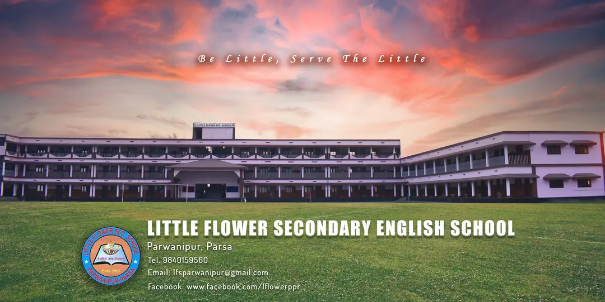
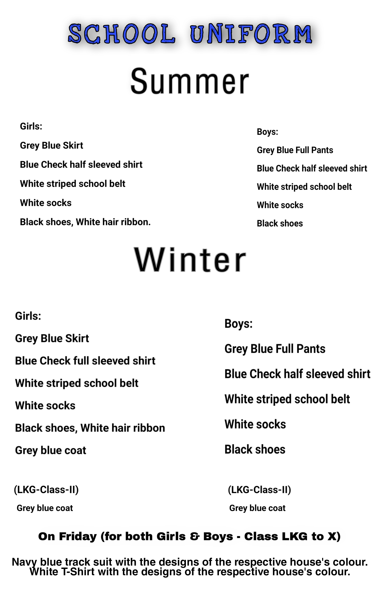

Little Flower School, Parwanipur, Parsa District, Nepal is established, managed and administered by the Nepal Little Flower Society (Reg. No. 724/053/054) and was opened in the year 2005, the Platinum Jubilee year of Little Flower Congregation.
The School was opened by the initiative and generous support of the Jyoti Group of Companies, Nepal in memory of late Mr. Mani Harsh Jyoti who had a special love and concern for children and took keen interest in their welfare.
Little Flower Sec. School is a co-educational institution aiming at a breakthrough in the fight against the darkness of ignorance, helping the students to plunge into the infinite realms of knowledge, develop their skills and inherent potentialities and thus to enhance their personality. The management and staff here make a sincere effort to instill in the students the love of God and love for fellow men, dedication to duty and an unparalleled desire for excellence. Students are given guidance to maintain noble ideals by inculcating in them the values of freedom, justice, compassion and a sense of social awareness and responsibility.
Academic excellence is one of the top priorites of our institution. Education is for the growth of the intellectual, mental as well as the spiritual faculties. It helps students to grow into a mature, responsible, disciplined and patriotic citizen. We prepare students to become confident enough to face the challenges of a competitive world and to be committed to the service of fellow men. They will be helped to join the mainstream of the nation and appreciate and preserve their culture and values. Besides imparting academic excellence, the school also tries to inculcate in the students leadership qualities, through co-curricular and extra-curricular activities, sense SO that they may cultivate a of belonging and concern for the underprivileged and the oppressed in the society. The school shall not leave any stone unturned to make education more relevant and meaningful, thus empowering the students to face the challenges of their life ahead.
The motto of our school is 'Tejasvi navadhitamastu', taken from the 'Taittriya Upanishad" which means, "let our study be enlightening and fruitful". Right knowledge enlightens and empowers. It aims at the total unfolding of the creative potentialities of the students. The people who become aware of their inner riches see their life and the reality around them in a new and bright perspective. When they are put at the service of others, they lighten their burdens too.Thus, knowledge lightens and enlightens.
Learning illumines both the teacher and the taught. This enlightenment, this new vision fills them with the power to transform their lives and the world. The kind of education that the Little Flower Sec. School is committed to impart is in tune with these ideals of education. Accordingly, knowledge is not a means to make a living, but to make the life meaningful. Let what we learn enlighten us. Tejasvi navadhitamastu.
